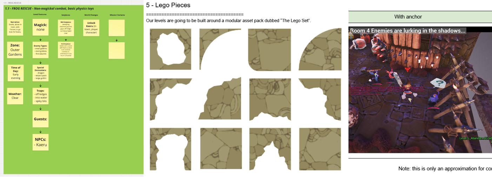

Levels
Awaysis has a campaign mode with 25 unique levels. There are also the aditional 'Arena' and 'Court' party game modes with their own maps.
I was in charge of creating the majority of these maps, this included being proactive about multidisiplinary communication, working with Art and Engineering leads as well as our external contractors to help deliver their content on time and to spec.
This page gives a high-level overview. For more detailed instructions please read the level bible below.
Campaign
Awaysis features linear levels, comprised of rooms. A standard level features around 15 rooms with about 20 minutes of play time. I was in charge of creating the pipeline for making these campaign missions, and then delivering the content. Each Room is built of individual building blocks as can be seen in the orange box view above.
The approach for awaysis was to build a library of rooms from which we could then quickly assemble levels to meet our fast-paced schedule demands.
Arena
These are fun bite-sized combat arenas for our player on player multiplayer mode.
The key to building these maps was instantly testing and iterating, regular play parites allowed us to develop PVP focused maps on the fly.
Court
Courts were made for our football inspired team PVP mode.
A key focus of the team mode was making the maps be equally fair and equally readable for both sides.
Pipeline

Having joined Awaysis as the only full time level designer, I was responsible with creating the level pipeline, tools and documentation as well as helping bring in and collaborate with external contractors to deliver our project on time.
Docs
With a project this large it was vital that every step of the level building process was thought out and documented.
For an example of my documentation, please check out exerpts of the level bible I wrote and maintained below.
Tools
To Aid in the development of Awaysis I was responsible for creating tools that level designers, artists and engineers could use.
Here are a few examples of tools created in bluetility.
E-Z Folder
As per the level bible, outliner foldering was a key element to making our levels. To aid in development I made a custom tool that could automacially clean any level to meet our requirements.
Although I authored the tools myself, clean blueprinting and readability was always a key focus.
Angle Tool
When making a slide based game, the angle of the ground slope was an important metric for us. A tool to quickly meassure such metrics was just one of the many tricks in my bag.